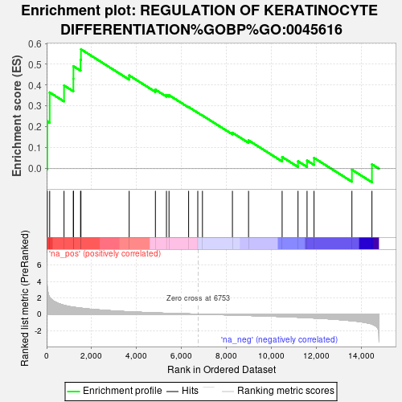
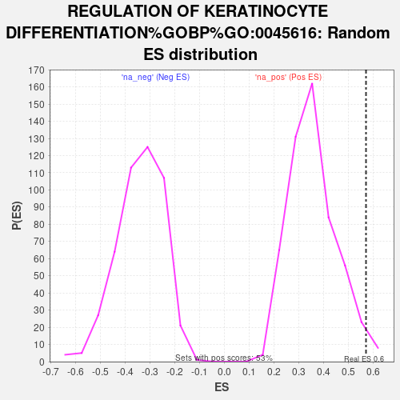

| | | Dataset | er_ranks |
| Phenotype | NoPhenotypeAvailable |
| Upregulated in class | na_pos |
| GeneSet | REGULATION OF KERATINOCYTE DIFFERENTIATION%GOBP%GO:0045616 |
| Enrichment Score (ES) | 0.57201034 |
| Normalized Enrichment Score (NES) | 1.6018257 |
| Nominal p-value | 0.018761726 |
| FDR q-value | 1.0 |
| FWER p-Value | 1.0 |
Table: GSEA Results Summary

Fig 1: Enrichment plot: REGULATION OF KERATINOCYTE DIFFERENTIATION%GOBP%GO:0045616
Profile of the Running ES Score & Positions of GeneSet Members on the Rank Ordered List

Fig 2: REGULATION OF KERATINOCYTE DIFFERENTIATION%GOBP%GO:0045616: Random ES distribution
Gene set null distribution of ES for REGULATION OF KERATINOCYTE DIFFERENTIATION%GOBP%GO:0045616